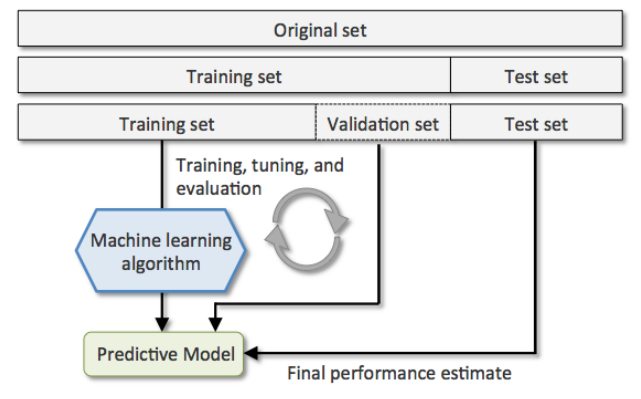
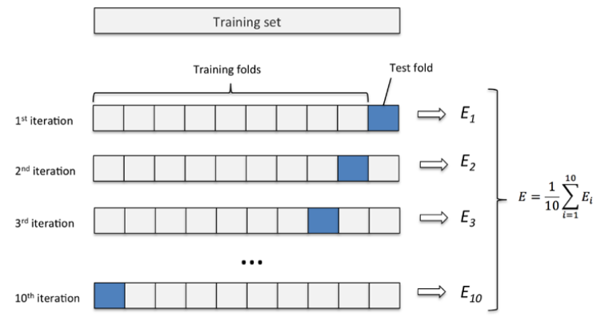
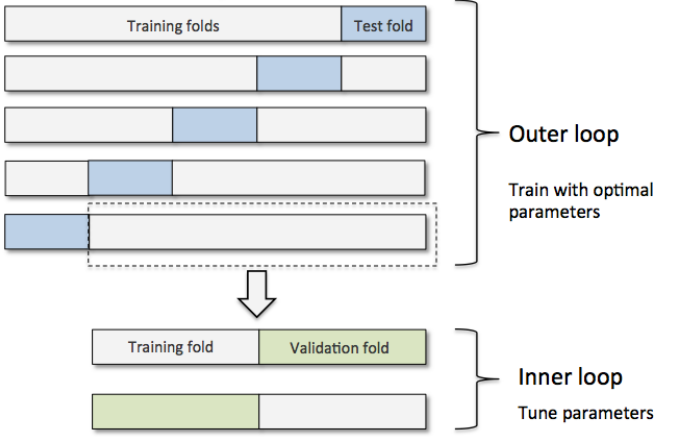
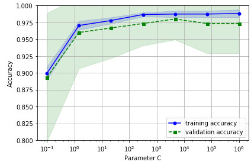

本文整理记录在sklearn中提供的模型调参的几个工具。涉及内容有cross_val_score、validation curves和GridSearchCV。
在机器学习中一般存在两种类型的参数：
- 从训练数据中学习到的参数，如逻辑回归的权重参数$W$ 。
- 超参数(hyperparameters)，如逻辑回归中的正则化系数，决策树中的depth参数(控制树的深度)。
超参数是在模型训练前人为指定的，它在一定程度上决定了模型效果的好坏。Sklean提供了来选取超参数的工具。
交叉验证-模型效果的评价
选取超参的标准是模型效果，通常我们对模型效果的评价方法就是模型的泛化能力。评价模型泛化能力的方法就是交叉验证。
交叉验证设计到两个方面：1. 数据集分割； 2. 泛化指标计算。
数据分割方式
note: 交叉验证的方法是和数据集分割方法紧密相连的，本节介绍数据分割方式也是介绍交叉验证方法。
常用的交叉验证方法如下：
holdout cross-validation ：将数据分割成训练集和测试集，训练集用于模型训练，测试集用于评估模型效果(泛化能力)
holdout方法的不足: 对数据分割方法敏感，原始数据的不同分割方法影响模型效果。holdout cross-validation V2：将原始数据分割为训练集和验证集和测试集，通过调整模型参数(超参)不停的在训练集上训练模型，并用验证集验证模型效果只能找到一个较好的模型，最后用测试集评估模型效果(泛化能力)。其实该方法已经具有了模型调优的功能。
holdout方法的不足: 对数据分割方法敏感，原始数据的不同分割方法影响模型效果。
K-fold cross-validation： 随机将数据分割为$k$个folds，用其中的$k-1$个作为训练集，剩下的一个作为测试集。那么可以得到该模型在$k$个测试集上的表现。取其算法平均值做为模型的泛化能力
from sklearn.model_selection import KFold
stratified k-fold cross-validation ：用在分类为题中，与K-fold相比stratified k-fold保证每一个fold中各类别的比例和整个训练数据集的比例相同。实验验证该方法相对于K-fold能够更好的平衡bias and variance。
from sklearn.cross_validation import StratifiedKFoldleave-one-out(LOO) cross-validation：是K-fold的极端形式，将K-fold中的k等于样本量。
GroupKFold： 用于搜索问题中，搜索训练数据是按照doc-query pair的形式存在的，一个query对应若干行，这就是一个group。在ltr问题中模型评价时计算的最小单位就是一个query，如ndcg。所以需要保证在训练集分割的时候一个query对应的这些行分割到相同的fold内。
from sklearn.model_selection import GroupKFold
sklearn中提供的数据分割方式如下表所示：
| 类名 | 描述 |
|---|---|
model_selection.GroupKFold([n_splits]) |
K-fold iterator variant with non-overlapping groups. |
model_selection.GroupShuffleSplit([…]) |
Shuffle-Group(s)-Out cross-validation iterator |
model_selection.KFold([n_splits, shuffle, …]) |
K-Folds cross-validator |
model_selection.LeaveOneGroupOut() |
Leave One Group Out cross-validator |
model_selection.LeavePGroupsOut(n_groups) |
Leave P Group(s) Out cross-validator |
model_selection.LeaveOneOut() |
Leave-One-Out cross-validator |
model_selection.LeavePOut(p) |
Leave-P-Out cross-validator |
model_selection.PredefinedSplit(test_fold) |
Predefined split cross-validator |
model_selection.RepeatedKFold([n_splits, …]) |
Repeated K-Fold cross validator. |
model_selection.RepeatedStratifiedKFold([…]) |
Repeated Stratified K-Fold cross validator. |
model_selection.ShuffleSplit([n_splits, …]) |
Random permutation cross-validator |
model_selection.StratifiedKFold([n_splits, …]) |
Stratified K-Folds cross-validator |
model_selection.StratifiedShuffleSplit([…]) |
Stratified ShuffleSplit cross-validator |
model_selection.TimeSeriesSplit([n_splits, …]) |
Time Series cross-validator |
泛化指标计算
使用sklearn计算泛化指标的方式
sklearn按照任务的不同分别定义了常用的模型评价指标
sklearn.metrics。如分类任务中定义的metrics.precision_score、metrics.recall_score。 回归任务中定义的metrics.mean_squared_error和metrics.r2_score。聚类任务中定义的metrics.mutual_info_score等。
预定义的metrics还有其对应的字符串名称，其对应关系见 预定义的scoring参数 ，这些字符串常用语 scoring参数。score函数。sklearn中的estimator都会用一个默认的score函数，该函数可以用于计算预定义的泛化指标。
如下面的例子所示，lr模型默认的score函数就是accuracy_score。1
2
3
4
5
6
7
8
9
10
11
12
13
14
15
16
17
18
19
20
21
22
23
24
25
26
27
28
29
30
31
32
33
34
35
36
37
38
39
40
41
42
43
44
45
46
47
48
49import numpy as np
from sklearn.datasets import load_iris
from sklearn.model_selection import StratifiedKFold
from sklearn.preprocessing import StandardScaler
from sklearn.pipeline import Pipeline
from sklearn.linear_model import LogisticRegression
from sklearn.metrics import accuracy_score
from sklearn.metrics import precision_score
np.random.seed(0)
iris = load_iris()
X, y = iris.data, iris.target
indices = np.arange(y.shape[0])
np.random.shuffle(indices)
X, y = X[indices], y[indices]
y = y > 1
pipe_lr = Pipeline([('scl', StandardScaler()),
('clf', LogisticRegression(penalty='l2', random_state=0, C=0.7))])
kfold = StratifiedKFold(n_splits = 5)
scores = []
for i, (train_ind, test_ind) in enumerate(kfold.split(X=X, y=y)):
trainX, trainy = X[train_ind], y[train_ind]
testX, testy = X[test_ind], y[test_ind]
pipe_lr.fit(trainX, trainy)
print "[CV %d] default score %f" % (i, pipe_lr.score(testX, testy))
test_pred = pipe_lr.predict(testX)
acc_score = accuracy_score(testy, test_pred)
print "[CV %d] accuracy score %f" % (i, acc_score)
pre_score = precision_score(testy, test_pred)
print "[CV %d] precision score %f" % (i, pre_score)
scores.append(acc_score)
print "mean accuracy score %f" % np.mean(scores)
# [CV 0] default score 1.000000
# [CV 0] accuracy score 1.000000
# [CV 0] precision score 1.000000
# [CV 1] default score 0.833333
# [CV 1] accuracy score 0.833333
# [CV 1] precision score 0.777778
# [CV 2] default score 1.000000
# [CV 2] accuracy score 1.000000
# [CV 2] precision score 1.000000
# [CV 3] default score 1.000000
# [CV 3] accuracy score 1.000000
# [CV 3] precision score 1.000000
# [CV 4] default score 0.933333
# [CV 4] accuracy score 0.933333
# [CV 4] precision score 0.833333
# mean accuracy score 0.953333
cross_val_score
上面两种方式都需要使用循环才能得到每一组测试集的score。cross_val_score是对以上两种方式的简化，用户只需要传入cv(交叉验证分割器)和scoring(使用的泛化误差评价方式)，直接返回每一组测试集的score。1
2
3
4
5
6
7
8
9
10
11
12
13
14
15
16
17
18
19
20
21
22
23
24
25
26
27
28
29
30
31
32
33import numpy as np
from sklearn.datasets import load_iris
from sklearn.model_selection import StratifiedKFold
from sklearn.preprocessing import StandardScaler
from sklearn.pipeline import Pipeline
from sklearn.linear_model import LogisticRegression
from sklearn.model_selection import cross_val_score
np.random.seed(0)
iris = load_iris()
X, y = iris.data, iris.target
indices = np.arange(y.shape[0])
np.random.shuffle(indices)
X, y = X[indices], y[indices]
y = y > 1
pipe_lr = Pipeline([('scl', StandardScaler()),
('clf', LogisticRegression(penalty='l2', random_state=0, C=0.7))])
kfold = StratifiedKFold(n_splits = 5)
scores = cross_val_score(estimator=pipe_lr,
X=X,
y=y,
#cv=5, # 可以为一个数组，该例中使用 5-fold的交叉验证
cv=kfold, # 也可以使用一个 split对象
scoring=None, # None：使用estimator的score函数；string：预定义的metrics；callable：自定义metrics，签名需为scorer(estimator, X, y)
n_jobs=1)
print 'CV accuracy scores: %s' % scores
print "mean accuracy score %f +/- %f" % (np.mean(scores) ,np.std(scores))
# CV accuracy scores: [ 1. 0.83333333 1. 1. 0.93333333]
# mean accuracy score 0.953333 +/- 0.065320
GridSearchCV
交叉验证是评估具有相同超参的模型的泛化能力的方法，即，一个交叉验证中使用的模型超参是一样的。所以对于同一个模型来说，交叉验证实际上就是评价一组超参好坏的。
下面举一个例子，一个模型有三个超参数：param1, param2, param3。为了说明方便，假设他们都是去整数。
这三个超参数可能的取值范围是：
- param1 : [1, 3]
- param2 : [1:2]
- param3 : [2: 3]
那么就有 $3 \times 2 \times 2 = 12$ 中可能的参数组合。我们的目标就是寻找其中的一个组合使模型效果最好。如果使用cross_val_score，我们需要人工穷举每一种组合，计算每一种可能的mean score ，找出mean score最小的一组。
sklearn已经帮我们实现了以上方法，即model_selection.GridSearchCV 。
estimator：所使用的分类器，如estimator=RandomForestClassifier(min_samples_split=100,min_samples_leaf=20,max_depth=8,max_features=’sqrt’,random_state=10), 并且传入除需要确定最佳的参数之外的其他参数。每一个分类器都需要一个scoring参数，或者score方法。
param_grid：值为字典或者列表，即需要最优化的参数的取值，param_grid =param_test1，param_test1 = {‘n_estimators’:range(10,71,10)}。
scoring :准确度评价标准，
- None： 默认这时需要使用estimator的score函数；
- string：使用预定义score， 参考 预定义的scoring参数， 如scoring=’roc_auc’，
- callable: 需要其函数签名形如：scorer(estimator, X, y)；
cv :交叉验证参数，默认None，使用三折交叉验证。指定fold数量，默认为3，也可以是yield训练/测试数据的生成器。
refit :默认为True,程序将会以交叉验证训练集得到的最佳参数，重新对所有可用的训练集与开发集进行，作为最终用于性能评估的最佳模型参数。即在搜索参数结束后，用最佳参数结果再次fit一遍全部数据集。
iid:默认True,为True时，默认为各个样本fold概率分布一致，误差估计为所有样本之和，而非各个fold的平均。
verbose：日志冗长度，int：冗长度，0：不输出训练过程，1：少量信息，>1：对每个子模型都输出。建议用2
n_jobs: 并行数，int：个数,-1：跟CPU核数一致, 1:默认值。
1 | from sklearn import svm, datasets |
nested cross-validation
该方法用于比较两种模型效果。
其思路如下图所示

外部循环是一个cross_val_score ，内部循环是GridSearchCV。每一个内部循环只使用外部的训练集作为全部数据。
其好处如下
in a nice study on the bias in error estimation, Varma and Simon concluded that the true error of the estimate is almost unbiased relative to the test set when nested cross-validation is used
举例如下：比较SVM和DecisionTree在iris数据集上做分类任务的效果
1 | from sklearn.svm import SVC |
可以发现SVM的效果更好。
validation curves
model_selection.validation_curve
validation curves可以理解为一张图表，其纵坐标为模型performance (score) ，行坐标为模型的一个参数。其表示的是随着参数的变化，模型在训练集和测试集上达到的效果。
作用：模型调参(只能针对一个特征)
1 | import numpy as np |

参考资料
Python Machine Learning